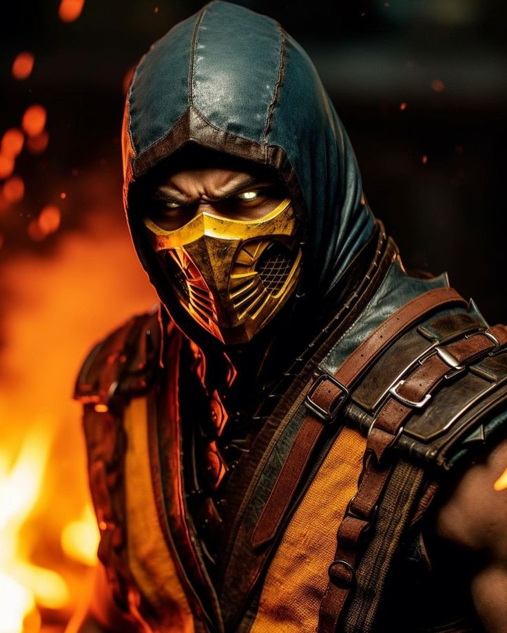

MORTAL KOMBAT
Ditulis Oleh Dyka Pada 22 Oktober 2023
Tahun 1995 film adaptasi video game Mortal Kombat dirilis dengan angka box office lumayan namun kurang baik dari sisi kritikus - saya pribadi setelah melihat kembali film ini sebelum nonton Mortal Kombat 2021 - melihat permasalahannya adalah pada sisi penampilan para pemeran (khususnya untuk karakter Lord Raiden yang ditampilkan tidak seperti aslinya) dan plotnya.
Dan di masa itu, publik sepertinya juga jengah (aku juga demikian) setelah disuguhi berbagai film adaptasi video game seperti Judge Dredd (Stallone), Power Rongers, dan setahun sebelumnya Street Fighter (Van Damme) yang jelek bukan main, hanya Mortal Kombat versi Paul WS Anderson unggul dari sisi konsep visual dan berpijak pada mitologi asli video game.
Setelah 16 tahun (kalau tidak ada pandemi sebetulnya 15 tahun), Mortal Kombat dirilis lagi dengan espektasi tinggi dari fans (saya juga walau bukan fans video game ini).
Film dibuka dengan "bertenaga" dengan kemunculan dibunuhnya Hanzo Hasasi (Hiroyuki Sanada) dengan seluruh keluarganya oleh Bi-han/SubZero (Joe Taslim), namun belati yang tertinggal diambil oleh Lord Raiden (Tananobu Asano) beserta bayi keturunan Hanzo yang disembunyikan. Berabad kemudian di sisi OUTWORLD, Shang Tsung (Chin Han) memanggil SubZero dengan para punggawanya membuat membunuh semua jawara tarung guna menguasai semesta. Shang Tsung tidak mau menunggu memenangkan Mortal Kombat ke 10, karena dia mempercayai ramalan bahwa keturunan Hanzo akan muncul mengalahkannya

Cerita kemudian bergulir dengan aksi SubZero memburu Cole Young (Lewis Tan) yang memiliki tato naga bawaan lahir, Cole kemudian berkolaborasi dengan Sonya Blade (Jessca Mc Namee), Jax (Mehcad Broks), keduanya mantan pasukan khusus yang mempercayai mitologi Mortal Kombat dan Kano (Josh Lawson) - seorang tentara bayaran. Mereka pun melakukan perjalanan yang mempertemukan mereka dengan Liu Kang (Ludi Lin), Kung Lao (Max Huang), Lord Raiden sebelum berhadapan dengan Shang Tsung dengan kelompoknya.
Kekurangan film ini adalah pada premisnya yang tidak stabil terkesan "tone" yang melompat lompat, penampilan sebagian pemeran yang seolah beradegan laga sebagusnya namun aktingnya kaku dengan dialog terkesan dihafal juga dengan dialoh humor yang kering, babak ke tiga yang klise termasuk Tananobu Asano yang kurang meyakinkan sebagai Lord Raiden (entah karena durasi karakternya minim) dan Chin Han yang tidak intimidatif memerankan Shang Tsung, dia kalah jauh dibandingkan Cary-Hiroyugi Tagawa (Mortal Kombat 1995). Ini yang disayangkan, karena narasi film memberikaN waktu yang cukup untuk pengenalan karakter
Dari sisi koreografi kelahi, film ini kelihatannya memang sengaja dibuat untuk rating 17+ karena adegan tarung yang cukup keras (masih kalah gory dengan The Raid dan Night Comes For Us) dan ada 2 adegan yang dipotong oleh LSF, namun ini yang membuat film ini sangat enjoyable sebab atraksi laga yang cukup ciamik, khususnya adegan tarung yang ditampilkan Joe Taslim sebagai Bi-han/SubZero dan Hiroyuki Sanada sebagai Hanzo/Scorpion.
Adegan tarung yang atraktif dan mmencekam dihiasi dengan tepat oleh efek suara serta musik yang benar benar kuat memberikan warna Mortal Kombat pada semua laga dan terkesan megah. Dan sisi koreografi laga ini lah kekuatan satu satunya dari Mortal Kombat 2021 yang bisa membuat penonton tidak akan terganggu dengan semua kelemahan itu dan menikmati film dari awal hingga akhir.